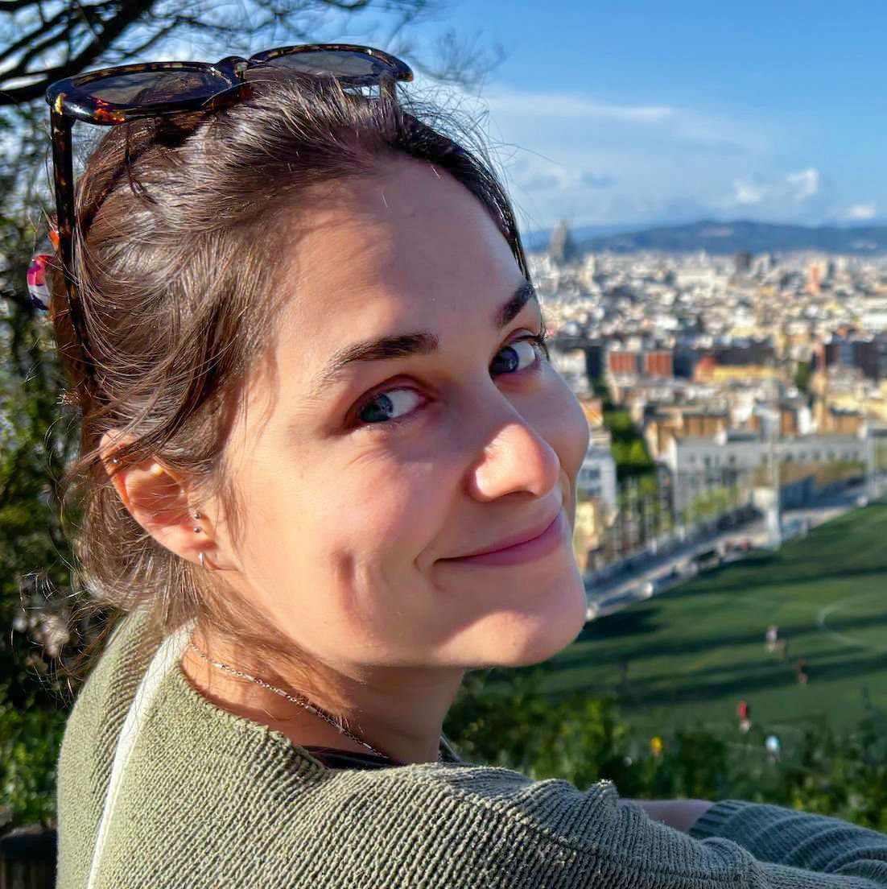

Exploring the extent to which (large) language models process language the way humans do — and how they can be used as plausible cognitive models.

I am a PhD student specializing in computational psycholinguistics and machine learning. My research focuses on human-inspired sentence processing in large language models — investigating the extent to which these models align with human cognition, with the broader goal of leveraging them to deepen our understanding of human language and language impairments.
I work at the Laboratoire de Linguistique Formelle (LLF), CNRS, at Université Paris Cité, under the supervision of Benoît Crabbé and Guillaume Wisniewski.
My PhD is part of the ANR-funded project COMPO where, together with other research groups, we explore ways to embed inductive biases related to compositionality and memory constraints in language models, in order to build models that are more efficient, using less data and fewer computational resources, and more cognitively plausible.
Interested in my work or want to collaborate? Feel free to reach out via email or connect on social media.